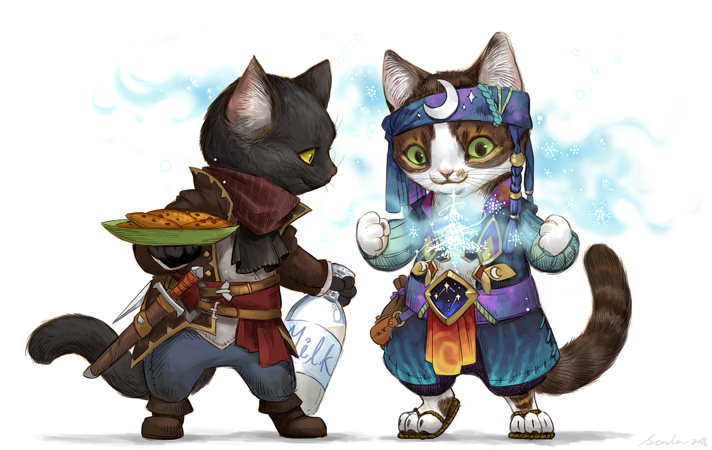
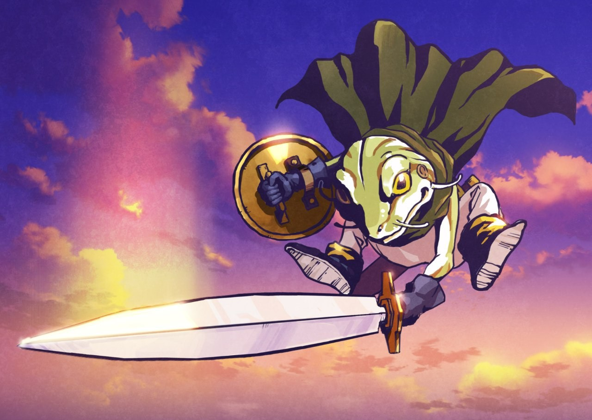
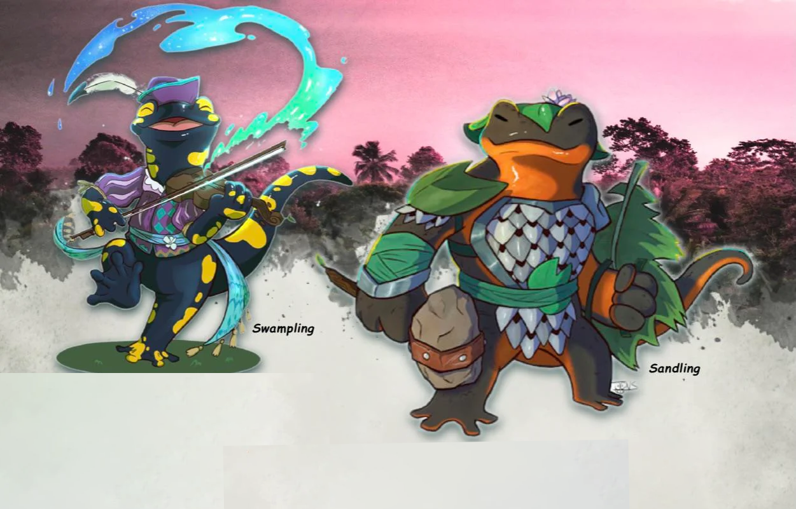
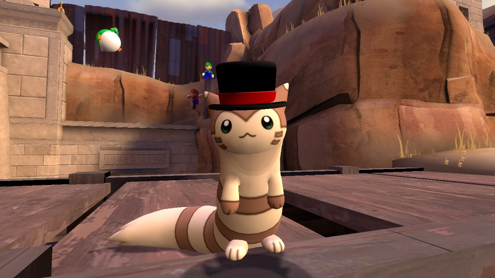

As raças
Uma lista das raças jogáveis.
-
Subraças
Um gato
-
normal
Um sapo
-
normal
Axolotl
-
normal
Não encontrei um background melhor para o furão


üêà Felis
Felis Traits
Seu personagem felis vai compartilhar alguns traços comuns e atributos com outros Felis.
Aumento no valor de Habilidade. Seu valor de Carisma aumenta em 2.
Tamanho. Felis estão entre 2 e 3 pés (0,6 e 0,9 metros) de altura e pesa 13kg
Deslocamento. Seu deslocamento é de 25 ft.
Garras. Devido às suas garras, você tem um deslocamento de escalada de 15 ft. Você também consegue usar suas garras como uma arma. Quando se acerta um ataque você dá 1d4 + atributo de Força como dano cortante e ataque desarmado.
Linhagem Felina. Escolha uma das linhagens.
Deslocamento. Seu deslocamento é de 25 ft.
Purrsuasão. Felis usam sua natureza pequena e fofa para sua vantagem o máximo que podem. Uma vez por dia, tem vantágem em um teste de Persuazão numa criatura amigável.
Natureza Curiosa. Sendo um Felis inquisitivo você tem proficiência nas jogadas de Investigação.
Linhagem Felina
Linhagem Comum. O gato malhado é o mais comum de todas as linhagens. De forma que eles sabem mais sobre esferas sociais comuns. Você aumenta seu atributo de Sabedoria em 1.
Nobre. Com o pelo puro como a neve mais branca, esses Felis nasceram sem cor e são normalmente vistos como os Felis mais nobres. Quando eles envelhecem, eles recebem a liderança dos seus clans. Uma vez por descanso longo, você pode instigar aos aliados num senso de vigor. Aqueles em um quadrado em volta de você recebem Pontos de Vida temporários iguais ao seu modificador de Carisma por 8 horas.
Natureza Ardente. De temperamento quente e rápido para atacar com garras, esses Felis laranjas ficam furiosos no campo de batalha. Aumente seu valor de Força em 1.
Sensor de Caça. Mestres da visão, aqueles de pelagem marrom foram destinados à caça. Você recebe vantagem no primeiro ataque contra uma criatura que não te atacou anteriormente.
Boa Fortuna. Os gatos de chita são os mais raros de toas as linhagens de Felis. As lendas dizem que toda a sorte do Felis preto foi para os gatos de chita. Uma vez por dia quando rolar um d20, você pode escolher rolar novamente. Você tem que aceitar o resultado do re-rolamento.
Adepto Arcano. Olhos estrelados e pele de um céu azul noturno, é dito que esses Felis são conectados com o Mar Astral. Aumenta seu atributo de Inteligência em 1.
Stalker Noturno. Cinza é a cor perfeita para se camuflar nas suas redondezas. Felis com a pele cinzenta são capazes de se esconder muito facilmente. Você ganhar proficiência na habilidade de Furtividade.
Azarento. Tipicamente, aqueles nascidos nessa linhagem, são da mais pura pelagem preta e carregam um azar natural onde vão. Uma vez por descanso longo, você pode lançar sua má sorte em um inimigo como uma reação, forçando eles à ter desvantagens em testes.
Mutação. Nascido com uma mutação genética, esses Felis não tem pelos ou possuem pelos tão pequenos que aparentam ser carecas. Para se aquecer, esses Felis estão em constante movimento. Você ganha proficiência em Acrobacias.
üê≠ MouseFolk

MouseFolk Traits
Seu personagem MouseFolk vai compartilhar alguns traços comuns e atributos com outros MouseFolks.
Aumento no valor de Habilidade. Seu valor de Destreza aumenta em 2.
Tamanho. Felis estão entre 2 e 2,5 pés (0,6 e 0,75 metros) de altura e pesa 11kg
Deslocamento. Seu deslocamento é de 25 ft.
Sentidos Afiados. Você tem proficiência em Percepção
Treinamento em armas dos ratos. Você tem proficiência com a rapieira, espada curta, arco curto, e handaxe (não sei se é machado de mão).
Linguagens. Você consegue falar, ler e escrever Comum e Fala Squeak. Mousefolks dão valor em anotar as suas lendas e histórias, além de encorajar todos a guardarem anotações e gravações de seus atos.
Subraça. Há dois tipos Mousefolks, Pata Leve e Pradários, que são mais próximos de serem famílias próximas do que subraças reais. Escolha uma delas.
Subraças
Patas Leves
Sendo um Mousefolk das Patas Leves, você evita os perigos das selvas sem dono pela segurança da civilização. Sua natureza estudiosa te dá uma brecha dos estudos arcanos e um toque para habilidades de troca e criação. A marca dos Patas Leves é um selo da melhor qualidade.
Incremento nos Valores de Habilidades. Seu atributo de Inteligência aumenta em 1.
Artista. Você ganha proficiência em um tipo das ferramentas de artesão ou em um instrumento musical
Contorção. Você pode se mover através de espaços pequenos como se você tivesse tamanho pequeno.
Pradários
Sendo um Mousefolk dos Prados, você faz o seu vivendo na selva. Você tem sentidos aguçados, profundos intuição e uma conexão com a natureza que poucos outras raças podem se orgulhar. O estande Pradário firmemente à beira da civilização, sabendo que seus olhos são o primeiro alarme e seu corpo e a lâmina são o último baluarte de incontáveis outros. Eles têm um senso de dever inabalável e uma vida inteira de experiência que os mantém afiado contra os perigos do mundo.
Incremento nos Valores de Habilidades. Seu atributo de Sabedoria aumenta em 1.
Bravo. Você tem vantagem em não se aterrizar
Falar com Pequenas Bestas. Através de sons e gestos, você pode se comunicar de forma simples com bestas pequenas ou menores.
üê∏ Sapo
Sapo's Traits
Seu personagem sapo vai compartilhar alguns traços comuns e atributos com outros sapos.
Aumento no valor de Habilidade. Seu valor de Destreza aumenta em 2 e sua Constituição em 1.
Tamanho. Sapos estão entre 2,5 e 3,5 pés de altura e pesa 13kg
Deslocamento. Seu deslocamento é de 25 ft. Seus dedos pegajosos te dão uma velocidade de escalada de 25 ft.
Anfíbio. Você respira em ambientes com água e ar
Imunidade à veneno. Você é imune à dano de veneno e a condição de envenenamento.
Imunidade à veneno. Você é imune à dano de veneno e a condição de envenenamento.
Corte Aquático. Como uma ação bônus, com qualquer arma cortante você consegue imbuir seus ataques com água causando 1d4 adicional de dano caso corpo a corpo. E é possível lançar a rajada d'água causando apenas 1d4 de dano.
Linguagens. Você consegue falar, ler e escrever Comum.
üíßüå≥üê∏ Mythlings
Mythlings Traits
Seu personagem Mythling vai compartilhar alguns traços comuns e atributos com outros Mythlings.
Aumento no valor de Habilidade. Seu valor de Carisma aumenta em 2 e sua Constituição em 1.
Tamanho. Mythlings estão entre 2 e 4 pés de altura e pesa 18kg
Deslocamento. Seu deslocamento é de 25 ft em terra e água.
Anfíbio. Você respira em ambientes com água e ar
Regeneração Natural. Uma vez por dia você pode recuperar 1d6 de vida enquanto se concentra por 1 minuto.
Resistência à veneno. Você tem resistência contra dano venenoso e tem vantagem em testes contra envenenamento.
Linguagens. Você consegue falar, ler e escrever Comum.
Bioluminescência. Seu corpo brilha ao seu desejo. Como uma ação bônus, seu corpo pode transmitir luz em até 20 pés. Esse efeito dura atpe você terminá-lo, como uma ação bônus, ou estar incapacitado.
Camuflagem nas Profundezas. Você tem vantagem em ações de furtividade enquanto debaixo d'água.
ü¶¶ Doninha
Doninha Traits
Seu personagem doninha vai compartilhar alguns traços comuns e atributos com outras doninhas.
Aumento no valor de Habilidade. Seu valor de Destreza e seu Carisma em 1.
Tamanho. Doninhas estão entre 2 e 4 pés de altura e pesa 18kg
Deslocamento. Seu deslocamento é de 35 ft.
Esgueirar-se. Você consegue se espremer em pequenos espaços que outros nem poderiam sonhar. Você cabe em qualquer buraco que é pelo menos 15 cm de diâmetro.
Resistência à veneno. Você tem resistência contra dano venenoso e tem vantagem em testes contra envenenamento.
Linguagens. Você consegue falar, ler e escrever Comum.
Bioluminescência. Seu corpo brilha ao seu desejo. Como uma ação bônus, seu corpo pode transmitir luz em até 20 pés. Esse efeito dura atpe você terminá-lo, como uma ação bônus, ou estar incapacitado.
Camuflagem nas Profundezas. Você tem vantagem em ações de furtividade enquanto debaixo d'água.
üêá Haregon
Haregon Traits
Seu personagem coelho vai compartilhar alguns traços comuns e atributos com outros coelhos.
Aumento no valor de Habilidade. Seu valor de Carisma aumenta em 2 e sua Constituição em 1.
Tamanho. Haregons estão entre 2 e 4 pés de altura e pesa 18kg
Deslocamento. Seu deslocamento é de 30 ft.
Gatilho de lebre. Você tem vantagem em testes de iniciativa
Sentidos Leporinos. Você tem proficiência em Percepção.
Pés da Sorte. Quando você falha em um teste de resistência de Destreza, você pode usar sua reação para rolar 1d4 e adicioná-lo ao teste de resistência, potencialmente transformando a falha em um sucesso. Você não pode usar esta reação se estiver caído ou se sua velocidade for 0.
Salto do Coelho. Como uma ação bônus, você pode pular um número de metros igual a cinco vezes seu bônus de proficiência, sem provocar ataques de oportunidade. Você pode usar esta característica somente se seu deslocamento for maior que 0. Você pode usá-la um número de vezes igual ao seu bônus de proficiência e recupera todos os usos gastos quando terminar um descanso longo.
Linguagens. Você consegue falar, ler e escrever Comum.